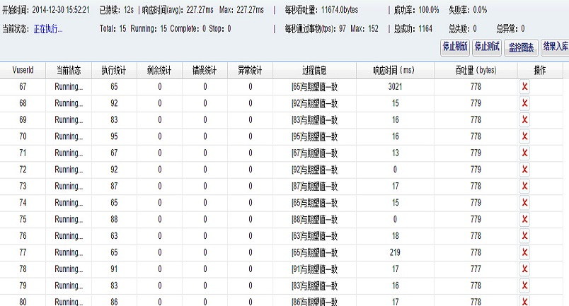

采用Apache开源项目Quartz，WEB方式部署。内置高效数据库连接池，更稳定的数据操作，面向多用户，自动监控指定的接口，多样化的监控策略，方便的业务操作，并且支持多种消息通知接口，如Email，短信等。能随时第一时间了解接口健康情况。
WEB部署方式，面向多用户。规范的管理测试用例，测试数据，测试步骤。并且含有执行用例的功能，保证上线前后各种特殊数据都被测试到。批次统计图，用例类型统计图能直观检视结果数据。
接口性能测试模块，能对指定的url进行简单的并发测试，统计TPS，吞吐量，吞吐率，平均响应时间，通过/失败率等等。结果数据实时入库，方便需要时调出。
并发测试功能提供对单一接口的并发测试
针对WEB系统GUI页面元素进行各种操作
支持常规C/S部署，WEB版的B/S分布式部署
工具首页：http://www.phoenixframe.org
娱乐工具，socket编程。工具框架代码结构可用于分布式系统通信。
邮箱：5156meng.feiyang@163.com
QQ：296595606
QQ交流群：246776066
微信号：phoenixframe_2013
新浪微博：不吐鱼的泡泡05
腾讯微博：mengfeiyanglove